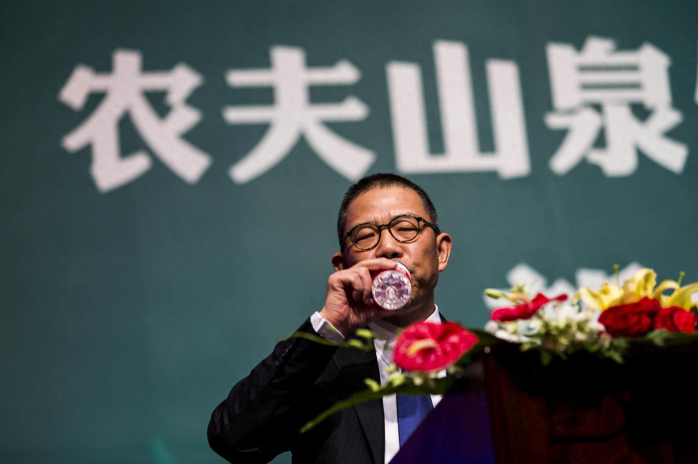

时隔3月，钟睒睒再次公开发声回应所有
2024-11-20 11:22·红星新闻
红星资本局11月20日消息，11月19日，农夫山泉（09633.HK）创始人钟睒睒在江西赣州出席活动，并回应市场关注，包括网络直播、做绿瓶水、被网暴、农业发展等。
距离8月登上央视财经频道《对话》栏目，钟睒睒时隔3个月，再次公开发声。
钟睒睒 图据 IC photo
“骂我的人，和我一样都是受害者”钟睒睒再次谈起今年3月的那次舆论攻击，彼时，农夫山泉遭遇到成立以来颇为严重的网暴。受此影响，农夫山泉瓶装水销量下滑。
钟睒睒说，有人利用了算法，算法不是老百姓想出来的，是有知识有文化的人想出来的，那些天天网上骂钟睒睒的人，和钟睒睒一样都是受害者。
“纯净水只值那么多钱”今年，农夫山泉火速推出绿色包装的纯净水产品，并以低价策略在市场销售，绿色包装的农夫山泉纯净水最低可以做到9.9元12瓶，引发市场热议。
钟睒睒再次提到做绿色瓶装水的初衷，他表示这款纯净水只做一个规格，说明农夫山泉做这个品非常克制，他一直控制绿瓶水的价格，不准卖贵，为的就是告诉大家，纯净水就是只值那么多钱。
据报道，由于水饮产品上半年失利，钟睒睒曾在公司内部要求包装水部门立下“军令状”，并发起一轮战略调整，他指示该部门如果不能靠红瓶、绿瓶产品抢回失去的市场份额，便要“整个部门都下课”。
红星资本局注意到，农夫山泉2023年财报显示，除“其他产品”出现下跌之外，农夫山泉的“包装饮用水产品”在几大产品中增速最低。2023年，农夫山泉包装饮用水同比增长10.9%，而茶饮同比增长83.3%，功能饮料同比增长27.7%，果汁饮料同比增长22.7%。
到今年上半年，农夫山泉实现半年度营收221.73亿元，同比增长8.4%，其中包装饮用水产品营收首次出现大幅下跌，同比下滑18.3%。
根据10月29日发布的2024胡润百富榜，钟睒睒的财富较去年下降1100亿元至3400亿元，让出蝉联三年的首富位置。
“看不起那些做直播带货的企业家”钟睒睒认为，电商平台持续的价格战会导致种种恶果。钟睒睒称，这不仅仅是劣币驱逐良币，甚至指向了产业发展，价格决定一切，这对中国品牌和中国产业是一种巨大伤害。
钟睒睒强调，自己永远不会下场直播带货，“我永远不会做直播带货，我也看不起那些做直播带货的企业家，你应该可以做更有价值的东西”，他进一步表示，“我认为那些企业是平面型的，我们这样的企业是垂直型的，我有根，那些人没有根”。
“我要求（公司）电商渠道销售收入（占比）不能超过5%，不然（那些线下）小店怎么养，小店老板们卖什么？每天那么多跑快递、送外卖小哥（的风险），谁来承担责任？”
“农业很苦，没有真正感情的人干不了”面对国内小规模、精细水果种植的成本和经济价值问题，钟晱晱认为，可以通过经济学中的价格牵引理论来解决，“我先把价格拉上来，产业牵引靠价格，看任何一个价格往上走的产业，价格在高位的时候一定是有很多人去做的。”
“农业是个试金石，因为农业很苦，没有真正的感情的人干不了。”钟晱晱还分享了农夫山泉与赣南脐橙的合作经历，此前脐橙最高售价仅为1.2元左右（每斤），而在2014年、2015年农夫山泉入场收购时可以开出2.5~2.6元（每斤）的价格。
“农业实际上在这么多项目中，我们是落下的，但智慧产业仍然有非常非常大的产业潜力。”钟晱晱认为，仅靠农民单一的知识体系想要发掘农业产业潜力是不够的，需要有新知识体系的人牵头。
谈到另一个知名品牌褚橙，钟睒睒直言，“褚橙是个具有企业家精神的品牌，褚时健是非常值得尊敬的企业家，对云南的贡献我们是望尘莫及。”
编辑 邓凌瑶 综合自每日经济新闻、界面新闻、21世纪经济报道